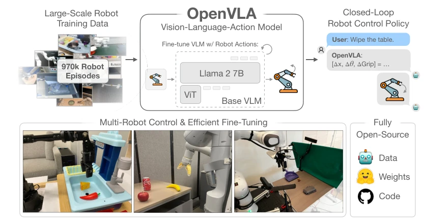
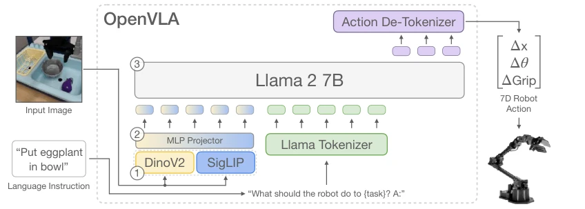
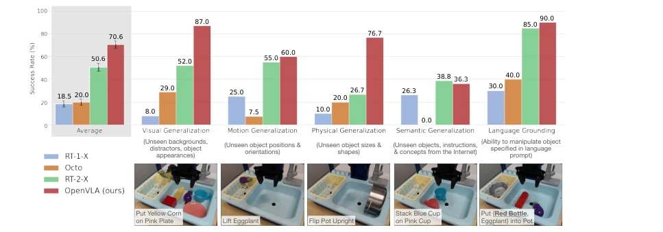
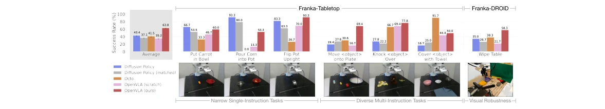
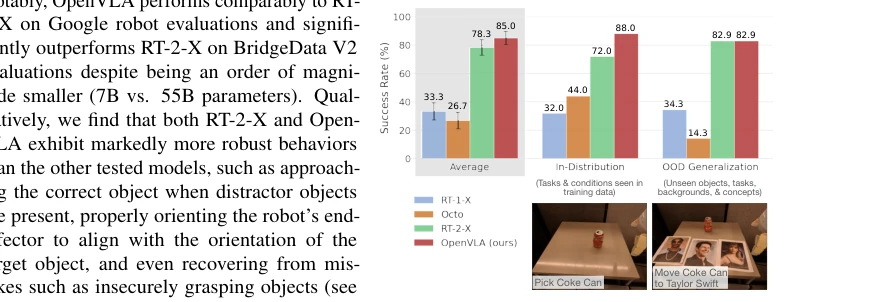
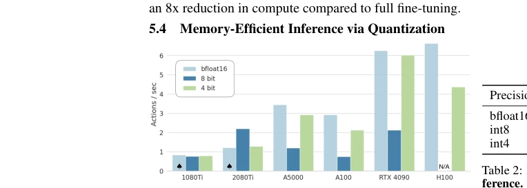
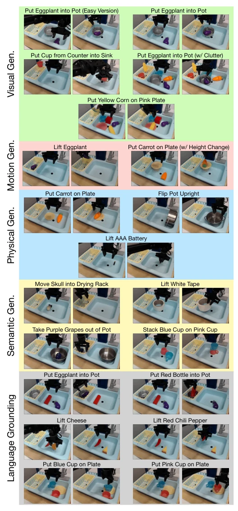
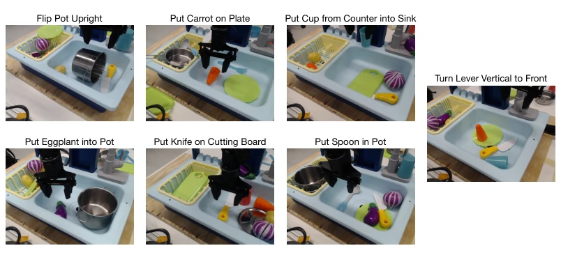
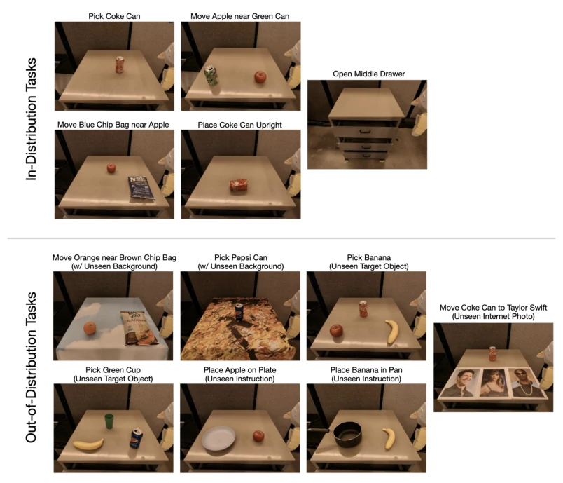
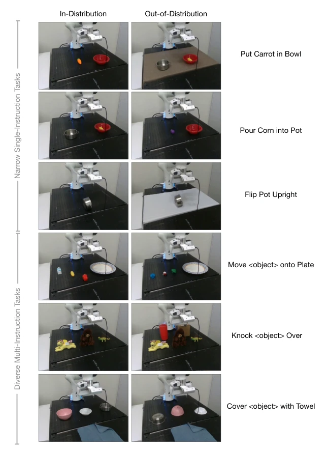

OpenVLA has essentially poured a bucket of cold water and poured a glass of hot wine to the robotics community. The cold water is for those still competing on parameters within closed-source circles; its 7B model has defeated the 55B RT-2-X, making the cost-performance ratio simply outrageous, directly challenging the notion that larger parameters equal justice. The hot wine is for the open-source community; finally there is a runnable large-scale VLA model that can run on consumer-grade GPUs and supports LoRA fine-tuning. But do not celebrate too early; it still uses single-image input, and the inference speed of 6Hz is a bit worrying for dexterous manipulation, with success rates not exceeding 90%, still falling short of true generalization. However, being able to seamlessly integrate Llama 2 and visual encoders, and support LoRA fine-tuning, this open-source spirit is indeed commendable. It is just hoped that next time they do not just release the model without data cleaning details, after all, OpenX data cleaning is also a complex engineering task.
Existing VLA models face two major pain points: first is closed-source, such as RT-2-X [1], which is strong but a black box, preventing the community from reproducing or improving; second is the lack of efficient fine-tuning methods, making it difficult to adapt to new robots. Although Octo [5] supports multiple robots, its architecture is patched together, not as good for generalization as end-to-end VLA. Robot policy generalization is poor, unable to handle unseen objects or instructions [4, 5]. Utilizing internet-scale pre-trained VLMs as a foundation, combined with robot data, is key to improving generalization [7]. OpenVLA aims to fill the gaps in open-source, efficient fine-tuning, and multi-robot support, enabling VLA to truly land.

Figure 1: We present OpenVLA, a 7B-parameter open-source vision-language-action model (VLA), trained on 970k robot episodes from the Open X-Embodiment dataset [1]. OpenVLA sets a new state of the art for generalist robot manipulation policies. It supports controlling multiple robots out of the box and can be quickly adapted to new robot domains via parameter-efficient fine-tuning. The OpenVLA checkpoints and PyTorch training pipeline are fully open-source and models can be downloaded and fine-tuned from HuggingFace.
The overall architecture is based on Prismatic-7B VLM. Input images have features extracted via SigLIP and DinoV2 dual encoders, concatenated, and then projected via MLP into the Llama 2 7B embedding space. Actions are discretized into 256 tokens, appended to the end of the Llama tokenizer. Training uses standard next-token prediction, but only calculates loss for action tokens. Data comes from Open X-Embodiment [1], cleaned and adjusted with mixed weights. Design decisions include: using 224x224 resolution (384 offers no improvement but is 3x slower), fine-tuning the visual encoder (freezing performs worse), training for 27 epochs. Supports LoRA fine-tuning to save VRAM, inference supports int4 quantization. Additionally, the codebase supports FSDP and FlashAttention, facilitating large-scale training.

Figure 2: OpenVLA model architecture. Given an image observation and a language instruction, the model predicts 7-dimensional robot control actions. The architecture consists of three key components: (1) a vision encoder that concatenates Dino V2 [25] and SigLIP [79] features, (2) a projector that maps visual features to the language embedding space, and (3) the LLM backbone, a Llama 2 7B-parameter large language model [10].
Evaluated on BridgeData V2 [6] and Google Robot. Baselines include RT-1-X [1], RT-2-X [1], Octo [5], and Diffusion Policy [3]. OpenVLA achieved 16.5% higher success rate than RT-2-X on 29 tasks, despite having 7 times fewer parameters. In Franka fine-tuning tasks, it outperforms Diffusion Policy [3] and Octo [5] trained from scratch. LoRA fine-tuning requires only 1.4% parameters, performance close to full fine-tuning. After int4 quantization, VRAM is halved, with no performance loss. It was found that single-image input limits multi-view tasks, and inference speed needs optimization. Specifically on BridgeData V2, OpenVLA outperforms RT-2-X in visual, motion, and physical generalization, only slightly inferior in semantic generalization.

Figure 3: BridgeData V2 WidowX robot evaluation tasks and results. We evaluate OpenVLA and prior state-of-the-art generalist robot policies on a comprehensive suite of tasks covering several axes of generalization, as well as tasks that specifically assess language conditioning ability. OpenVLA achieves highest overall perfor- mance and even outperforms closed-source model RT-2-X in all categories except for semantic generalization. Average success rates ± StdErr are computed across 170 total rollouts per approach. See Table 4 for detailed results.

Figure 5: Adapting to new robot setups. We evaluate the state-of-the-art Diffusion Policy trained from scratch on seven Franka Emika Panda tasks (10–150 demonstrations each), as well as generalist robot policies Octo and OpenVLA fine-tuned on the same data. Diffusion Policy exhibits strong performance on narrow single-instruction tasks, while Octo and OpenVLA perform better on diverse fine-tuning tasks involving multiple instructions and distractor objects. Overall, OpenVLA achieves highest aggregate performance across both setups, suggesting that it is an effective default for learning a policy on a downstream task. Average success rates ± StdErr are computed across 129 rollouts per approach (99 for Franka-Tabletop tasks and 30 for Franka-DROID tasks). See Table 7 for detailed results.
其他图片Other Figures

Figure 4: Google robot evaluation results. We evaluate generalist robot policies on in-distribution and out-of- distribution (OOD) tasks on the mobile manipulator used in RT-1 and RT-2 evaluations [2, 7]. We find that Open- VLA and RT-2-X attain comparable performance and significantly outperform RT-1-X and Octo overall. Aver- age success rates ± StdErr are computed across 60 total rollouts per approach. See Table 6 for detailed results.

Figure 6: OpenVLA inference speed for various GPUs. Both bfloat16 and int4 quantization achieve high throughput, especially on GPUs with Ada Lovelace architecture (RTX 4090, H100). Fur- ther speed-ups are possible with modern LLM inference frame- works like TensorRT-LLM [89]. ♠: Model sharded across two GPUs to fit.

Figure 7: BridgeData V2 WidowX robot evaluation tasks. We evaluate every generalist robot policy on 4 types out-of-distribution (OOD) generalization tasks: visual, motion, physical, and semantic (as defined in Section 5.1). Every pair of images shows the start state and an example end state after the robot completes the task. We also rigorously assess language grounding in the 3 tasks shown in the bottom 3 rows, by changing the prompt while fixing the initial state and testing whether the policy can approach the correct target object.

Figure 8: Original BridgeData V2 sink environment tasks. Images from sample demonstrations in the sink environment from the original BridgeData V2 dataset reveal that all demonstrations in this environment were initialized such that the robot’s end-effector was positioned immediately above the target object. Note that these initial states are different from the initial states we use in our BridgeData V2 evaluation tasks shown in Fig. 7. In our evaluations, we always initialize the robot’s end-effector to a fixed location above the sink, rather than positioning it directly above the target object (except for one task: “Put Eggplant into Pot (Easy Version)”).

Figure 9: Google robot evaluation tasks. We evaluate every generalist robot policy on in-distribution tasks and out-of-distribution (OOD) generalization tasks. OOD tasks involve unseen backgrounds, target objects, instructions/object relations, and semantic concepts (e.g., photos from the Internet that do not appear in robot action data).

Figure 10: Franka-Tabletop fine-tuning tasks. Franka-Tabletop tasks used in the data-efficient adaptation experiments in Section 5.2 and described in detail in Fig. 10 are depicted above. The first three of six tasks, shown in the top three rows, only involve a single instruction, while the last three tasks in the bottom three rows involve multiple objects and instructions (the instructions specify the target object or target location). The first column shows sample initial states matching the training data distribution, while the second column shows out-of-distribution (OOD) initial states (e.g., unseen backgrounds, target objects, distractors, and object positions/orientations). Every policy in Section 5.2 is evaluated with 10–12 rollouts on in-distribution tasks and 5–6 rollouts on OOD